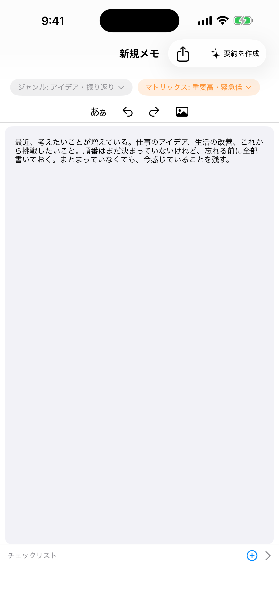
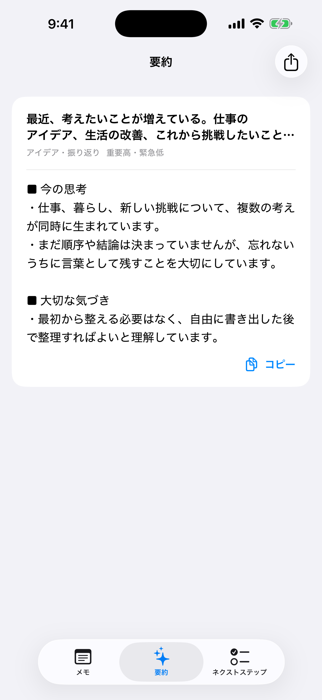
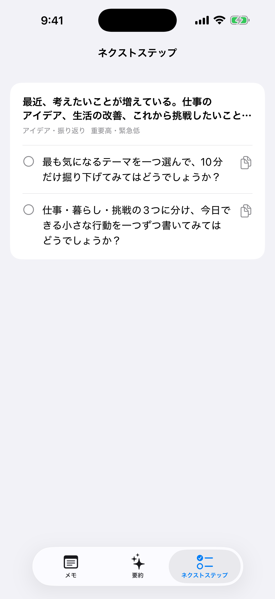
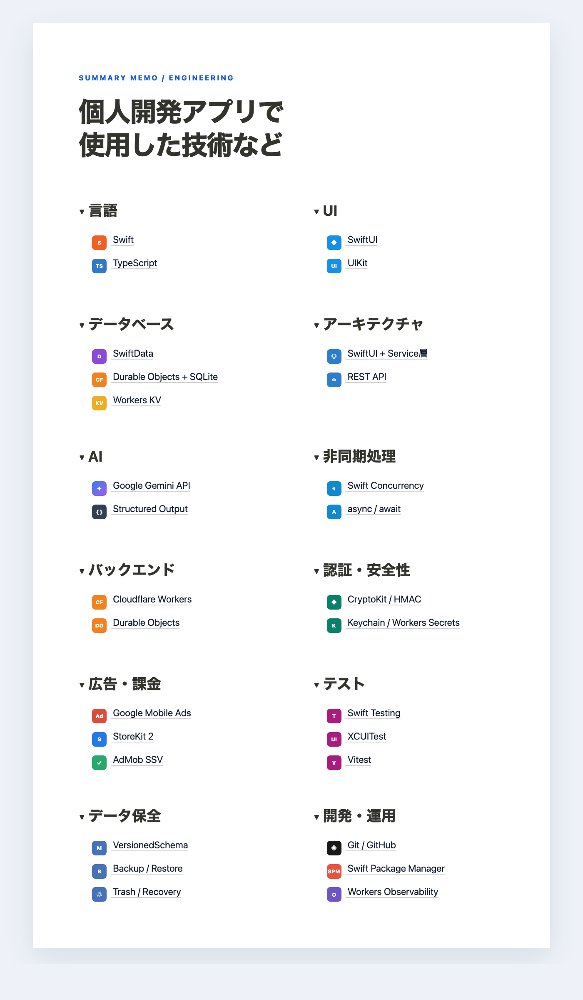

思いつくまま書く
殴り書き、短文、感情、タスク。最初から文章を整える必要はありません。
THINK FREELY · ORGANIZE CLEARLY · MOVE FORWARD
自由に書くのは、人間の仕事。
整理するのは、AIの仕事。
まとまっていなくても、文章になっていなくても大丈夫。感情や意図を残したまま、読み返したくなる要約と、今日から試せるネクストステップへ。
せっかく書いたメモ。
書いて終わるメモから、活用するメモへ。
ONE THOUGHT, THREE VIEWS
オリジナルのメモ・AI要約・ネクストステップ。ひとつの思考を、連動する3つの画面で見渡せます。

殴り書き、短文、感情、タスク。最初から文章を整える必要はありません。

似ている内容を集め、見出しを付け、重複を整理。単なる短縮ではなく、意味を残して再構成します。

整理された内容をもとに、小さく具体的な行動をチェックリストで提案します。
DESIGNED FOR REAL THOUGHTS
言葉の断片を意味の近いまとまりへ。感情や葛藤を平らにせず、そのメモに合う見出しで読み返しやすく整理します。
要約から実行可能な提案を導き、チェックリストとして一歩ずつ進めます。
自作ジャンルと重要度×緊急度マトリックスで、思考を自分らしく整理できます。
メモを絞り込むと、対応する要約とネクストステップも同じ並びで見つかります。
継続保存、正式なデータ移行、ゴミ箱、バックアップと復元を備えています。
ENGINEERING CASE STUDY
ユーザーの思考を預かるアプリだからこそ、データ保全・通信の安全性・費用制御・失敗経路のテストを設計の中心に置きました。
VersionedSchemaによる正式移行、継続的な下書き保存、30日間のゴミ箱、JSONバックアップを実装。
Workersを安全な中継層にし、構造化出力で要約とネクストステップを一貫して生成。
端末署名、本文上限、Durable Objectsの強整合な利用台帳、月間費用サーキットブレーカーを採用。
AdMob SSVで視聴を検証。外部通信はモック化し、成功・上限・通信断・重複実行まで自動テスト。

技術スタックを詳しく見る →SUMMARY MEMO
思いつくまま書く。あとから整理する。そして、次の一歩へ。
アプリについて詳しく見る